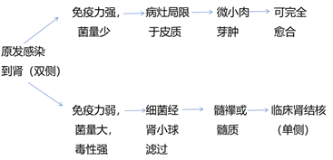

# 第五十篇 泌尿、男生殖系统结核
# 一、泌尿系统结核
# (一) 病理
# \1. 肾结核

- 早期：
① 结核结节、结核肉芽肿
② 肾皮质内多发性结核结节，是由淋巴细胞、浆细胞、巨噬细胞和上皮样细胞形成的结核性肉芽组织
逐渐蔓延：结核结节融合 → 干酪样脓肿、溃疡性空洞 → 结核性脓肾或肾积脓 → 纤维化、钙化、
＂肾自截”：若输尿管完全闭塞，尿液不能排入膀胱，结核性膀胱炎将逐渐好转，尿路刺激症状亦可缓解甚至消失，但肾却因坏死物质积聚而被广泛破坏，功能损坏甚至全部丧失，这就是所谓的 “自行肾切除”（autonephrectomy）或 “肾自截”
# \2. 输尿管结核
早期：表现为黏膜、黏膜下层结核结节、溃疡、肉芽肿和纤维化，病变是多发性的
后期：病变修复愈合后，管壁纤维化增粗变硬，管腔呈节段性狭窄，致使尿流下行受阻，引起肾积水，加速肾结核病变发展，肾功能受到进一步损害，甚至发展成为结核性脓肾，肾功能完全丧失
# \3. 膀胱结核
- 早期：
① 黏膜充血、水肿，散在结核结节形成，病变常从病侧输尿管口周围开始，逐渐扩散至膀胱的其他处
② 结核结节可互相融合形成溃疡、肉芽肿，有时深达肌层，结核性溃疡较少见
- 晚期：
① 可累及全部的膀胱，病变愈合致使膀胱壁广泛纤维化和瘢痕收缩，使膀胱壁失去伸张能力，膀胱容量显著减少（不足 50ml） ，称为挛缩膀胱（ contractcd bladder ）。
② 膀胱结核病变及挛缩膀胱常可致健侧输尿管口狭窄或闭合不全，形成洞穴样输尿管管口。
③ 膀胱内压升高，导致肾盂尿液梗阻或膀胱尿液反流，引起对侧肾积水。
④ 挛缩膀胱和对侧肾积水都是肾结核常见的晚期并发症。
⑤ 膀胱壁结核溃疡向深层侵及，偶可穿透膀胱壁与邻近器官形成瘘，如结核性膀胱阴道瘘或膀胱直肠瘘
# \4. 尿道结核
主要发生于男性，常为前列腺、精囊结核形成空洞破坏后尿道所致，少数为膀胱结核蔓延引起。其病理改变主要是结核性溃疡、纤维化导致尿道狭窄，引起排尿困难，加剧肾功能损害
# (二) 临床表现
\1. 尿频、尿急、尿痛：是肾结核的典型症状之一：
晚期膀胱发生挛缩，容量显著缩小，尿频更加严重，每日排尿次数达数十次，甚至出现尿失禁现象
\2. 血尿：是肾结核的重要症状，常为终末血尿：
肾结核的血尿常在尿频、尿急、尿痛症状发生以后出现，但也有以血尿为初发症状者
\3. 脓尿：是肾结核的常见症状
\4. 腰痛和肿块：肾结核虽然主要病变在肾，但一般无明显腰痛
仅少数肾结核病变破坏严重和梗阻，发生结核性脓肾或继发肾周感染，或输尿管被血块、干酪样物质堵塞时，可引起腰部钝痛或绞痛
\5. 男性生殖系统结核：肾结核男性病人中约有 50％～70％合并生殖系统结核。临床上表现最明显是附睾结核，附睾可触及不规则硬块。输精管结核病变时，变得粗硬并呈 “串珠” 样改变
\6. 全身症状肾结核病人的全身症状常不明显。晚期肾结核或合并其他器官活动结核时，可以有发热、盗汗、消瘦、贫血、虚弱，食欲不振和血沉快等典型结核症状
# (三) 诊断
# \1. 病史：
慢性膀胱炎：凡是无明显原因的慢性膀胱炎，症状持续存在并逐渐加重，伴有终末血尿；
尿培养无细菌生长，经抗菌药物治疗无明显疗效；
附睾有硬结或伴阴囊慢性窦道者，应考虑有肾结核的可能。
# \2. 尿液检查
尿呈酸性，尿蛋白阳性，有较多红细胞和白细胞。
尿沉淀涂片抗酸染色可找到抗酸杆菌，以清晨第一次尿液检查阳性率最高，至少连续检查 3 次。
抗酸杆菌不应作为诊断肾结核的唯一依据（因包皮垢杆菌、枯草杆菌也是抗酸杆菌，易和结核杆菌混淆）。
尿结核杆菌培养时间较长（4～8 周）但可靠，阳性率可达 90%，这对肾结核的诊断有决定性意义
# \3. 影像学诊断：
包括 B 超、X 线、CT 及 MRI 等检查。对确诊肾结核，判断病变严重程度，决定治疗方案非常重要
B 超：可初步确定病变部位，常显示病肾结构紊乱，有钙化则显示强回声，B 超也较容易发现对侧肾积水及膀胱有无挛缩
X 线检查：可能见到病肾局灶或斑点状钙化影或全肾广泛钙化。应与肾结石鉴别
① 静脉尿路造影（IVU）可以了解分侧肾功能、病变程度与范围，对肾结核治疗方案的选择必不可少。
② 早期表现单个肾盏模糊，虫蛀样改变，杯口甚至肾盏消失
③ 病变进展，肾盂肾盏出现变形，内壁粗糙，并可见到肾盏连接或分开的肾实质内多发性空洞，一个或多个肾盏消失
- CT 和 MRI 对中晚期肾结核能清楚地显示扩大的肾盏肾盂、皮质空洞及钙化灶，三维成像还可以显示输尿管全长病变
① MRI 水成像对诊断肾结核对侧肾积水有独到之处。
② 在双肾结核或肾结核对侧肾积水，静脉尿路造影显影不良时，CT、MRI 有助于确定诊断
# \4. 膀胱镜检查
可见膀胱黏膜充血、水肿、浅黄色结核结节、结核性溃疡、肉芽肿及瘢痕等病变，以膀胱三角区和病侧输尿管口周围较为明显
结核性肉芽肿易误诊为肿瘤，必要时取活组织检查明确诊断。病侧输尿管口可呈 “洞穴” 状，有时可见混浊尿液喷出
膀胱挛缩容量小于 50ml 或有急性膀胱炎时，不宜作膀胱镜检查
# (四) 鉴别诊断
| 肾结核引起的膀胱炎 | 以尿频开始，膀胱刺激症状长期存在并进行性加重，抗感染治疗无效 |
|---|---|
| 非特异性膀胱炎 | 主要是大肠埃希菌感染，多见女性，起病急，疾病开始就有尿频、尿急、尿痛，经抗感染治疗后症状很快缓解或消失 |
# (五) 治疗
# \1. 药物治疗
早期、适量、联合、规律、全程
适用于早期肾结核， 抗结核药物：首选药物有吡嗪酰胺、异烟肼、利福平和链霉素等杀菌药物，其他如乙胺丁醇、环丝氨酸、乙硫异烟胺等抑菌药为二线药物
# \2. 手术治疗
凡药物治疗 6～9 个月无效，肾结核破坏严重者，应在药物治疗的配合下行手术治疗。
肾切除术前抗结核治疗不应少于 2 周
① 肾切除术
・肾结核破坏严重，而对侧肾正常，应切除患肾
・双侧肾结核一侧广泛破坏呈 “无功能” 状态，另一侧病变较轻，在抗结核药物治疗一段时间后，择期切除严重的一侧患肾
・肾结核对侧肾积水，如果积水肾功能代偿不良，应先引流肾积水，保护肾功能，待肾功能好转后再切除无功能的患肾
② 保留肾组织的肾结核手术
・肾部分切除术：适用病灶局限于肾的一极
・结核病灶清除术：适用局限于肾实质表面闭合性的结核性脓肿，与肾集合系统不相通。
③ 解除输尿管狭窄的手术
・输尿管对端吻合术：输尿管结核病变致使管腔狭窄引起肾积水，可以切除狭窄段，行输尿管端端吻合术
・输尿管膀胱吻合术：狭窄靠近膀胱者，则施行狭窄段切除，输尿管膀胱吻合术，放置双 J 形输尿管支架引流管，术后 1 ～ 2 个月拔除
④ 挛缩膀胱的手术治疗
・肠膀胱扩大术：肾结核并发挛缩膀胱，在患肾切除及抗结核治疗 3～6 个月，待膀胱结核完全愈合后，对侧肾正常、无结核性尿道狭窄的病人，可行肠膀胱扩大术
・尿流改道术：挛缩膀胱的男性病人往往有前列腺、精囊结核引起后尿道狭窄，为了改善和保护积水肾仅有的功能，应施行输尿管皮肤造口，回肠膀胱或肾造口这等尿流改道术
# 二、男生殖系统结核
・男生殖系统结核大多数继发于肾结核，一般来自后尿道感染，少数由血行直接播散所致。首先在前列腺、精囊中引起病变，以后再经输精管蔓延到附睾和睾丸
・单纯前列腺、精囊结核，因部位隐蔽，临床症状常不明显，不易发现
・附睾结核（epididymal tuberculosis）临床症状较明显，容易被病人和临床医生发现
# (一) 病理
\1. 病理改变主要为结核结节、干酪坏死、空洞形成和纤维化等，钙化极少见。
\2. 前列腺结核：脓肿向尿道破溃，可使后尿道呈空洞状，边缘不规则。前列腺、精囊纤维化以后则形成坚硬肿块。
\3. 输精管结核：常致管腔堵塞，输精管变粗变硬，呈 “串珠” 状改变。
\4. 附睾结核：病变常从附睾尾开始，呈干酪样变、脓肿及纤维化，可累及整个附睾。少数血行感染引起的附睾结核，病变多从附睾头部开始。附睾结核常侵及鞘膜和阴囊壁，脓肿破溃后可形成经久不愈的窦道。
\5. 睾丸结核：常是附睾结核直接扩展蔓延所致
# (二) 临床表现
\1. 大多数为 20～40 岁
\2. 前列腺、精囊结核的临床症状多不明显
\3. 附睾结核一般发病缓慢，表现为阴囊部肿胀不适或下坠感，附睾尾或整个附睾呈硬结状，疼痛不明显。形成寒性脓肿如继发感染，阴囊局部出现红肿、疼痛。脓肿破溃后可形成经久不愈的窦道。双侧病变则失去生育能力
# (三) 诊断
\1. 有上述临床表现：直肠指检扪及前列腺、精囊硬结或触及附睾硬结，疑有男生殖系统结核时，需全面检查泌尿系统有无结核病变
\2. 尿常规：尿找抗酸杆菌、尿结核杆菌培养和静脉尿路造影等检查以除外肾结核。前列腺液或精液中有时可发现结核杆菌
\3. 骨盆平片：偶可发现前列腺结核钙化
\4. 尿道造影：可显示前列腺部尿道变形或扩大，造影剂可进入前列腺空洞内
\5. 精囊造影：价值不大，极少应用
# (四) 鉴别诊断
\1. 前列腺结核：需与非特异性前列腺炎及前列腺癌鉴别。
① 慢性前列腺炎：病人症状一般较为明显，有结节形成者，范围较局限，常有压痛，经抗感染治疗后，结节可缩小甚至消失。
② 前列腺癌：发病多为老年人，前列腺特异性抗原（PSA）测定、直肠指检及影像学检查有助于诊断，必要时需作前列腺穿刺活组织检查
\2. 附睾结核需与非特异性慢性附睾炎鉴别：
① 附睾结核硬块常不规则，病程缓慢，常可触及 “串珠” 样、粗硬的输精管，如附睾病变与皮肤粘连或形成阴囊皮肤窦道。
② 非特异性慢性附睾炎：很少形成局限性硬结，一般与阴囊皮肤无粘连，常有急性炎症发作史或伴有慢性前列腺炎病史。
③ 睾丸肿瘤： B 超有助于鉴别
# (五) 治疗
\1. 前列腺、精囊结核一般用抗结核药物治疗，不需要用手术方法，但应清除泌尿系统可能存在的其他结核病灶，如肾结核、附睾结核等
\2. 早期附睾结核应用抗结核药物治疗，多数可以治愈。如果病变较重，疗效不好，已有脓肿或有阴囊皮肤窦道形成，应在药物治疗配合下作附睾及睾丸切除术。手术应尽可能保留附睾、睾丸组织